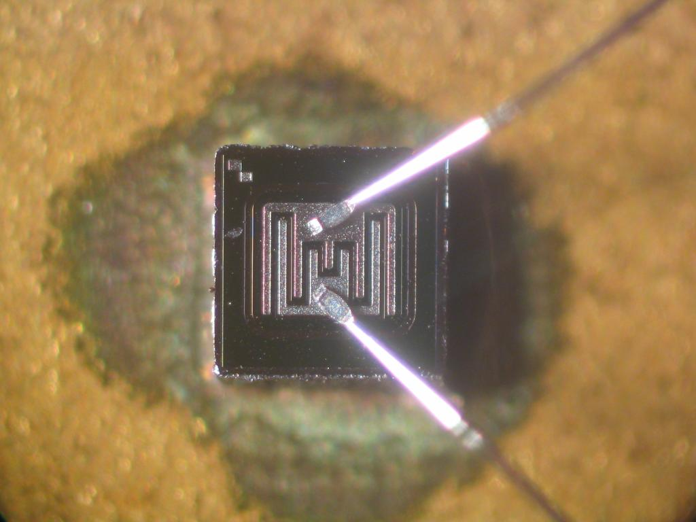

Devices have been used to aid computation for thousands of years, mostly using one-to-one correspondence with fingers. The earliest counting device was probably a form of tally stick. Later record keeping aids throughout the Fertile Crescent included calculi (clay spheres, cones, etc.) which represented counts of items, probably livestock or grains, sealed in hollow unbaked clay containers. The use of counting rods is one example.
The abacus was initially used for arithmetic tasks. The Roman abacus was developed from devices used in Babylonia as early as 2400 BC. Since then, many other forms of reckoning boards or tables have been invented. In a medieval European counting house, a checkered cloth would be placed on a table, and markers moved around on it according to certain rules, as an aid to calculating sums of money.
Devices have been used to aid computation for thousands of years, mostly using one-to-one correspondence with fingers. The earliest counting device was probably a form of tally stick. Later record keeping aids throughout the Fertile Crescent included calculi (clay spheres, cones, etc.) which represented counts of items, probably livestock or grains, sealed in hollow unbaked clay containers. The use of counting rods is one example.
The abacus was initially used for arithmetic tasks. The Roman abacus was developed from devices used in Babylonia as early as 2400 BC. Since then, many other forms of reckoning boards or tables have been invented. In a medieval European counting house, a checkered cloth would be placed on a table, and markers moved around on it according to certain rules, as an aid to calculating sums of money.
 The Antikythera mechanism is believed to be the earliest mechanical analog "computer", according to Derek J. de Solla Price. It was designed to calculate astronomical positions. It was discovered in 1901 in the Antikythera wreck off the Greek island of Antikythera, between Kythera and Crete, and has been dated to c. 100 BC. Devices of a level of complexity comparable to that of the Antikythera mechanism would not reappear until a thousand years later.
Many mechanical aids to calculation and measurement were constructed for astronomical and navigation use. The planisphere was a star chart invented by Abū Rayhān al-Bīrūnī in the early 11th century. The astrolabe was invented in the Hellenistic world in either the 1st or 2nd centuries BC and is often attributed to Hipparchus. A combination of the planisphere and dioptra, the astrolabe was effectively an analog computer capable of working out several different kinds of problems in spherical astronomy. An astrolabe incorporating a mechanical calendar computer and gear-wheels was invented by Abi Bakr of Isfahan, Persia in 1235. Abū Rayhān al-Bīrūnī invented the first mechanical geared lunisolar calendar astrolabe, an early fixed-wired knowledge processing machine with a gear train and gear-wheels, c. 1000 AD.
The sector, a calculating instrument used for solving problems in proportion, trigonometry, multiplication and division, and for various functions, such as squares and cube roots, was developed in the late 16th century and found application in gunnery, surveying and navigation.
The planimeter was a manual instrument to calculate the area of a closed figure by tracing over it with a mechanical linkage.
The slide rule was invented around 1620–1630, shortly after the publication of the concept of the logarithm. It is a hand-operated analog computer for doing multiplication and division. As slide rule development progressed, added scales provided reciprocals, squares and square roots, cubes and cube roots, as well as transcendental functions such as logarithms and exponentials, circular and hyperbolic trigonometry and other functions. Slide rules with special scales are still used for quick performance of routine calculations, such as the E6B circular slide rule used for time and distance calculations on light aircraft.
In the 1770s, Pierre Jaquet-Droz, a Swiss watchmaker, built a mechanical doll (automaton) that could write holding a quill pen. By switching the number and order of its internal wheels different letters, and hence different messages, could be produced. In effect, it could be mechanically "programmed" to read instructions. Along with two other complex machines, the doll is at the Musée d'Art et d'Histoire of Neuchâtel, Switzerland, and still operates.
The tide-predicting machine invented by Sir William Thomson in 1872 was of great utility to navigation in shallow waters. It used a system of pulleys and wires to automatically calculate predicted tide levels for a set period at a particular location.
The differential analyser, a mechanical analog computer designed to solve differential equations by integration, used wheel-and-disc mechanisms to perform the integration. In 1876, Lord Kelvin had already discussed the possible construction of such calculators, but he had been stymied by the limited output torque of the ball-and-disk integrators. In a differential analyzer, the output of one integrator drove the input of the next integrator, or a graphing output. The torque amplifier was the advance that allowed these machines to work. Starting in the 1920s, Vannevar Bush and others developed mechanical differential analyzers.
The Antikythera mechanism is believed to be the earliest mechanical analog "computer", according to Derek J. de Solla Price. It was designed to calculate astronomical positions. It was discovered in 1901 in the Antikythera wreck off the Greek island of Antikythera, between Kythera and Crete, and has been dated to c. 100 BC. Devices of a level of complexity comparable to that of the Antikythera mechanism would not reappear until a thousand years later.
Many mechanical aids to calculation and measurement were constructed for astronomical and navigation use. The planisphere was a star chart invented by Abū Rayhān al-Bīrūnī in the early 11th century. The astrolabe was invented in the Hellenistic world in either the 1st or 2nd centuries BC and is often attributed to Hipparchus. A combination of the planisphere and dioptra, the astrolabe was effectively an analog computer capable of working out several different kinds of problems in spherical astronomy. An astrolabe incorporating a mechanical calendar computer and gear-wheels was invented by Abi Bakr of Isfahan, Persia in 1235. Abū Rayhān al-Bīrūnī invented the first mechanical geared lunisolar calendar astrolabe, an early fixed-wired knowledge processing machine with a gear train and gear-wheels, c. 1000 AD.
The sector, a calculating instrument used for solving problems in proportion, trigonometry, multiplication and division, and for various functions, such as squares and cube roots, was developed in the late 16th century and found application in gunnery, surveying and navigation.
The planimeter was a manual instrument to calculate the area of a closed figure by tracing over it with a mechanical linkage.
The slide rule was invented around 1620–1630, shortly after the publication of the concept of the logarithm. It is a hand-operated analog computer for doing multiplication and division. As slide rule development progressed, added scales provided reciprocals, squares and square roots, cubes and cube roots, as well as transcendental functions such as logarithms and exponentials, circular and hyperbolic trigonometry and other functions. Slide rules with special scales are still used for quick performance of routine calculations, such as the E6B circular slide rule used for time and distance calculations on light aircraft.
In the 1770s, Pierre Jaquet-Droz, a Swiss watchmaker, built a mechanical doll (automaton) that could write holding a quill pen. By switching the number and order of its internal wheels different letters, and hence different messages, could be produced. In effect, it could be mechanically "programmed" to read instructions. Along with two other complex machines, the doll is at the Musée d'Art et d'Histoire of Neuchâtel, Switzerland, and still operates.
The tide-predicting machine invented by Sir William Thomson in 1872 was of great utility to navigation in shallow waters. It used a system of pulleys and wires to automatically calculate predicted tide levels for a set period at a particular location.
The differential analyser, a mechanical analog computer designed to solve differential equations by integration, used wheel-and-disc mechanisms to perform the integration. In 1876, Lord Kelvin had already discussed the possible construction of such calculators, but he had been stymied by the limited output torque of the ball-and-disk integrators. In a differential analyzer, the output of one integrator drove the input of the next integrator, or a graphing output. The torque amplifier was the advance that allowed these machines to work. Starting in the 1920s, Vannevar Bush and others developed mechanical differential analyzers.
 Charles Babbage, an English mechanical engineer and polymath, originated the concept of a programmable computer. Considered the "father of the computer", he conceptualized and invented the first mechanical computer in the early 19th century. After working on his revolutionary difference engine, designed to aid in navigational calculations, in 1833 he realized that a much more general design, an Analytical Engine, was possible. The input of programs and data was to be provided to the machine via punched cards, a method being used at the time to direct mechanical looms such as the Jacquard loom. For output, the machine would have a printer, a curve plotter and a bell. The machine would also be able to punch numbers onto cards to be read in later. The Engine incorporated an arithmetic logic unit, control flow in the form of conditional branching and loops, and integrated memory, making it the first design for a general-purpose computer that could be described in modern terms as Turing-complete.
The machine was about a century ahead of its time. All the parts for his machine had to be made by hand – this was a major problem for a device with thousands of parts. Eventually, the project was dissolved with the decision of the British Government to cease funding. Babbage's failure to complete the analytical engine can be chiefly attributed to political and financial difficulties as well as his desire to develop an increasingly sophisticated computer and to move ahead faster than anyone else could follow. Nevertheless, his son, Henry Babbage, completed a simplified version of the analytical engine's computing unit (the mill) in 1888. He gave a successful demonstration of its use in computing tables in 1906.
Charles Babbage, an English mechanical engineer and polymath, originated the concept of a programmable computer. Considered the "father of the computer", he conceptualized and invented the first mechanical computer in the early 19th century. After working on his revolutionary difference engine, designed to aid in navigational calculations, in 1833 he realized that a much more general design, an Analytical Engine, was possible. The input of programs and data was to be provided to the machine via punched cards, a method being used at the time to direct mechanical looms such as the Jacquard loom. For output, the machine would have a printer, a curve plotter and a bell. The machine would also be able to punch numbers onto cards to be read in later. The Engine incorporated an arithmetic logic unit, control flow in the form of conditional branching and loops, and integrated memory, making it the first design for a general-purpose computer that could be described in modern terms as Turing-complete.
The machine was about a century ahead of its time. All the parts for his machine had to be made by hand – this was a major problem for a device with thousands of parts. Eventually, the project was dissolved with the decision of the British Government to cease funding. Babbage's failure to complete the analytical engine can be chiefly attributed to political and financial difficulties as well as his desire to develop an increasingly sophisticated computer and to move ahead faster than anyone else could follow. Nevertheless, his son, Henry Babbage, completed a simplified version of the analytical engine's computing unit (the mill) in 1888. He gave a successful demonstration of its use in computing tables in 1906.
During the first half of the 20th century, many scientific computing needs were met by increasingly sophisticated analog computers, which used a direct mechanical or electrical model of the problem as a basis for computation. However, these were not programmable and generally lacked the versatility and accuracy of modern digital computers. The first modern analog computer was a tide-predicting machine, invented by Sir William Thomson in 1872. The differential analyser, a mechanical analog computer designed to solve differential equations by integration using wheel-and-disc mechanisms, was conceptualized in 1876 by James Thomson, the brother of the more famous Lord Kelvin. The art of mechanical analog computing reached its zenith with the differential analyzer, built by H. L. Hazen and Vannevar Bush at MIT starting in 1927. This built on the mechanical integrators of James Thomson and the torque amplifiers invented by H. W. Nieman. A dozen of these devices were built before their obsolescence became obvious. By the 1950s, the success of digital electronic computers had spelled the end for most analog computing machines, but analog computers remained in use during the 1950s in some specialized applications such as education (control systems) and aircraft (slide rule).
 By 1938, the United States Navy had developed an electromechanical analog computer small enough to use aboard a submarine. This was the Torpedo Data Computer, which used trigonometry to solve the problem of firing a torpedo at a moving target. During World War II similar devices were developed in other countries as well.
Early digital computers were electromechanical; electric switches drove mechanical relays to perform the calculation. These devices had a low operating speed and were eventually superseded by much faster all-electric computers, originally using vacuum tubes. The Z2, created by German engineer Konrad Zuse in 1939, was one of the earliest examples of an electromechanical relay computer.
In 1941, Zuse followed his earlier machine up with the Z3, the world's first working electromechanical programmable, fully automatic digital computer. The Z3 was built with 2000 relays, implementing a 22 bit word length that operated at a clock frequency of about 5–10 Hz. Program code was supplied on punched film while data could be stored in 64 words of memory or supplied from the keyboard. It was quite similar to modern machines in some respects, pioneering numerous advances such as floating point numbers. Rather than the harder-to-implement decimal system (used in Charles Babbage's earlier design), using a binary system meant that Zuse's machines were easier to build and potentially more reliable, given the technologies available at that time. The Z3 was Turing complete.
By 1938, the United States Navy had developed an electromechanical analog computer small enough to use aboard a submarine. This was the Torpedo Data Computer, which used trigonometry to solve the problem of firing a torpedo at a moving target. During World War II similar devices were developed in other countries as well.
Early digital computers were electromechanical; electric switches drove mechanical relays to perform the calculation. These devices had a low operating speed and were eventually superseded by much faster all-electric computers, originally using vacuum tubes. The Z2, created by German engineer Konrad Zuse in 1939, was one of the earliest examples of an electromechanical relay computer.
In 1941, Zuse followed his earlier machine up with the Z3, the world's first working electromechanical programmable, fully automatic digital computer. The Z3 was built with 2000 relays, implementing a 22 bit word length that operated at a clock frequency of about 5–10 Hz. Program code was supplied on punched film while data could be stored in 64 words of memory or supplied from the keyboard. It was quite similar to modern machines in some respects, pioneering numerous advances such as floating point numbers. Rather than the harder-to-implement decimal system (used in Charles Babbage's earlier design), using a binary system meant that Zuse's machines were easier to build and potentially more reliable, given the technologies available at that time. The Z3 was Turing complete.
 Purely electronic circuit elements soon replaced their mechanical and electromechanical equivalents, at the same time that digital calculation replaced analog. The engineer Tommy Flowers, working at the Post Office Research Station in London in the 1930s, began to explore the possible use of electronics for the telephone exchange. Experimental equipment that he built in 1934 went into operation five years later, converting a portion of the telephone exchange network into an electronic data processing system, using thousands of vacuum tubes. In the US, John Vincent Atanasoff and Clifford E. Berry of Iowa State University developed and tested the Atanasoff–Berry Computer (ABC) in 1942, the first "automatic electronic digital computer". This design was also all-electronic and used about 300 vacuum tubes, with capacitors fixed in a mechanically rotating drum for memory.
During World War II, the British at Bletchley Park achieved a number of successes at breaking encrypted German military communications. The German encryption machine, Enigma, was first attacked with the help of the electro-mechanical bombes which were often run by women. To crack the more sophisticated German Lorenz SZ 40/42 machine, used for high-level Army communications, Max Newman and his colleagues commissioned Flowers to build the Colossus. He spent eleven months from early February 1943 designing and building the first Colossus. After a functional test in December 1943, Colossus was shipped to Bletchley Park, where it was delivered on 18 January 1944 and attacked its first message on 5 February.
Colossus was the world's first electronic digital programmable computer. It used a large number of valves (vacuum tubes). It had paper-tape input and was capable of being configured to perform a variety of boolean logical operations on its data, but it was not Turing-complete. Nine Mk II Colossi were built (The Mk I was converted to a Mk II making ten machines in total). Colossus Mark I contained 1,500 thermionic valves (tubes), but Mark II with 2,400 valves, was both 5 times faster and simpler to operate than Mark I, greatly speeding the decoding process.
Purely electronic circuit elements soon replaced their mechanical and electromechanical equivalents, at the same time that digital calculation replaced analog. The engineer Tommy Flowers, working at the Post Office Research Station in London in the 1930s, began to explore the possible use of electronics for the telephone exchange. Experimental equipment that he built in 1934 went into operation five years later, converting a portion of the telephone exchange network into an electronic data processing system, using thousands of vacuum tubes. In the US, John Vincent Atanasoff and Clifford E. Berry of Iowa State University developed and tested the Atanasoff–Berry Computer (ABC) in 1942, the first "automatic electronic digital computer". This design was also all-electronic and used about 300 vacuum tubes, with capacitors fixed in a mechanically rotating drum for memory.
During World War II, the British at Bletchley Park achieved a number of successes at breaking encrypted German military communications. The German encryption machine, Enigma, was first attacked with the help of the electro-mechanical bombes which were often run by women. To crack the more sophisticated German Lorenz SZ 40/42 machine, used for high-level Army communications, Max Newman and his colleagues commissioned Flowers to build the Colossus. He spent eleven months from early February 1943 designing and building the first Colossus. After a functional test in December 1943, Colossus was shipped to Bletchley Park, where it was delivered on 18 January 1944 and attacked its first message on 5 February.
Colossus was the world's first electronic digital programmable computer. It used a large number of valves (vacuum tubes). It had paper-tape input and was capable of being configured to perform a variety of boolean logical operations on its data, but it was not Turing-complete. Nine Mk II Colossi were built (The Mk I was converted to a Mk II making ten machines in total). Colossus Mark I contained 1,500 thermionic valves (tubes), but Mark II with 2,400 valves, was both 5 times faster and simpler to operate than Mark I, greatly speeding the decoding process.
 The ENIAC (Electronic Numerical Integrator and Computer) was the first electronic programmable computer built in the U.S. Although the ENIAC was similar to the Colossus, it was much faster, more flexible, and it was Turing-complete. Like the Colossus, a "program" on the ENIAC was defined by the states of its patch cables and switches, a far cry from the stored program electronic machines that came later. Once a program was written, it had to be mechanically set into the machine with manual resetting of plugs and switches. The programmers of the ENIAC were six women, often known collectively as the "ENIAC girls".
It combined the high speed of electronics with the ability to be programmed for many complex problems. It could add or subtract 5000 times a second, a thousand times faster than any other machine. It also had modules to multiply, divide, and square root. High speed memory was limited to 20 words (about 80 bytes). Built under the direction of John Mauchly and J. Presper Eckert at the University of Pennsylvania, ENIAC's development and construction lasted from 1943 to full operation at the end of 1945. The machine was huge, weighing 30 tons, using 200 kilowatts of electric power and contained over 18,000 vacuum tubes, 1,500 relays, and hundreds of thousands of resistors, capacitors, and inductors.
The ENIAC (Electronic Numerical Integrator and Computer) was the first electronic programmable computer built in the U.S. Although the ENIAC was similar to the Colossus, it was much faster, more flexible, and it was Turing-complete. Like the Colossus, a "program" on the ENIAC was defined by the states of its patch cables and switches, a far cry from the stored program electronic machines that came later. Once a program was written, it had to be mechanically set into the machine with manual resetting of plugs and switches. The programmers of the ENIAC were six women, often known collectively as the "ENIAC girls".
It combined the high speed of electronics with the ability to be programmed for many complex problems. It could add or subtract 5000 times a second, a thousand times faster than any other machine. It also had modules to multiply, divide, and square root. High speed memory was limited to 20 words (about 80 bytes). Built under the direction of John Mauchly and J. Presper Eckert at the University of Pennsylvania, ENIAC's development and construction lasted from 1943 to full operation at the end of 1945. The machine was huge, weighing 30 tons, using 200 kilowatts of electric power and contained over 18,000 vacuum tubes, 1,500 relays, and hundreds of thousands of resistors, capacitors, and inductors.
The principle of the modern computer was proposed by Alan Turing in his seminal 1936 paper, On Computable Numbers. Turing proposed a simple device that he called "Universal Computing machine" and that is now known as a universal Turing machine. He proved that such a machine is capable of computing anything that is computable by executing instructions (program) stored on tape, allowing the machine to be programmable. The fundamental concept of Turing's design is the stored program, where all the instructions for computing are stored in memory. Von Neumann acknowledged that the central concept of the modern computer was due to this paper. Turing machines are to this day a central object of study in theory of computation. Except for the limitations imposed by their finite memory stores, modern computers are said to be Turing-complete, which is to say, they have algorithm execution capability equivalent to a universal Turing machine.
Early computing machines had fixed programs. Changing its function required the re-wiring and re-structuring of the machine. With the proposal of the stored-program computer this changed. A stored-program computer includes by design an instruction set and can store in memory a set of instructions (a program) that details the computation. The theoretical basis for the stored-program computer was laid by Alan Turing in his 1936 paper. In 1945, Turing joined the National Physical Laboratory and began work on developing an electronic stored-program digital computer. His 1945 report "Proposed Electronic Calculator" was the first specification for such a device. John von Neumann at the University of Pennsylvania also circulated his First Draft of a Report on the EDVAC in 1945. The Manchester Baby was the world's first stored-program computer. It was built at the Victoria University of Manchester by Frederic C. Williams, Tom Kilburn and Geoff Tootill, and ran its first program on 21 June 1948. It was designed as a testbed for the Williams tube, the first random-access digital storage device. Although the computer was considered "small and primitive" by the standards of its time, it was the first working machine to contain all of the elements essential to a modern electronic computer. As soon as the Baby had demonstrated the feasibility of its design, a project was initiated at the university to develop it into a more usable computer, the Manchester Mark 1. Grace Hopper was the first person to develop a compiler for programming language. The Mark 1 in turn quickly became the prototype for the Ferranti Mark 1, the world's first commercially available general-purpose computer. Built by Ferranti, it was delivered to the University of Manchester in February 1951. At least seven of these later machines were delivered between 1953 and 1957, one of them to Shell labs in Amsterdam. In October 1947, the directors of British catering company J. Lyons & Company decided to take an active role in promoting the commercial development of computers. The LEO I computer became operational in April 1951 and ran the world's first regular routine office computer job.
 The concept of a field-effect transistor was proposed by Julius Edgar Lilienfeld in 1925. John Bardeen and Walter Brattain, while working under William Shockley at Bell Labs, built the first working transistor, the point-contact transistor, in 1947, which was followed by Shockley's bipolar junction transistor in 1948. From 1955 onwards, transistors replaced vacuum tubes in computer designs, giving rise to the "second generation" of computers. Compared to vacuum tubes, transistors have many advantages: they are smaller, and require less power than vacuum tubes, so give off less heat. Junction transistors were much more reliable than vacuum tubes and had longer, indefinite, service life. Transistorized computers could contain tens of thousands of binary logic circuits in a relatively compact space. However, early junction transistors were relatively bulky devices that were difficult to manufacture on a mass-production basis, which limited them to a number of specialised applications. At the University of Manchester, a team under the leadership of Tom Kilburn designed and built a machine using the newly developed transistors instead of valves. Their first transistorised computer and the first in the world, was operational by 1953, and a second version was completed there in April 1955. However, the machine did make use of valves to generate its 125 kHz clock waveforms and in the circuitry to read and write on its magnetic drum memory, so it was not the first completely transistorized computer. That distinction goes to the Harwell CADET of 1955, built by the electronics division of the Atomic Energy Research Establishment at Harwell. The metal–oxide–silicon field-effect transistor (MOSFET), also known as the MOS transistor, was invented by Mohamed M. Atalla and Dawon Kahng at Bell Labs in 1959. It was the first truly compact transistor that could be miniaturised and mass-produced for a wide range of uses. With its high scalability, and much lower power consumption and higher density than bipolar junction transistors, the MOSFET made it possible to build high-density integrated circuits. In addition to data processing, it also enabled the practical use of MOS transistors as memory cell storage elements, leading to the development of MOS semiconductor memory, which replaced earlier magnetic-core memory in computers. The MOSFET led to the microcomputer revolution, and became the driving force behind the computer revolution. The MOSFET is the most widely used transistor in computers, and is the fundamental building block of digital electronics.
The next great advance in computing power came with the advent of the integrated circuit (IC). The idea of the integrated circuit was first conceived by a radar scientist working for the Royal Radar Establishment of the Ministry of Defence, Geoffrey W.A. Dummer. Dummer presented the first public description of an integrated circuit at the Symposium on Progress in Quality Electronic Components in Washington, D.C. on 7 May 1952. The first working ICs were invented by Jack Kilby at Texas Instruments and Robert Noyce at Fairchild Semiconductor. Kilby recorded his initial ideas concerning the integrated circuit in July 1958, successfully demonstrating the first working integrated example on 12 September 1958. In his patent application of 6 February 1959, Kilby described his new device as "a body of semiconductor material ... wherein all the components of the electronic circuit are completely integrated". However, Kilby's invention was a hybrid integrated circuit (hybrid IC), rather than a monolithic integrated circuit (IC) chip. Kilby's IC had external wire connections, which made it difficult to mass-produce. Noyce also came up with his own idea of an integrated circuit half a year later than Kilby. Noyce's invention was the first true monolithic IC chip. His chip solved many practical problems that Kilby's had not. Produced at Fairchild Semiconductor, it was made of silicon, whereas Kilby's chip was made of germanium. Noyce's monolithic IC was fabricated using the planar process, developed by his colleague Jean Hoerni in early 1959. In turn, the planar process was based on the silicon surface passivation and thermal oxidation processes developed by Mohamed Atalla at Bell Labs in the late 1950s. Modern monolithic ICs are predominantly MOS (metal-oxide-semiconductor) integrated circuits, built from MOSFETs (MOS transistors). After the first MOSFET was invented by Mohamed Atalla and Dawon Kahng at Bell Labs in 1959, Atalla first proposed the concept of the MOS integrated circuit in 1960, followed by Kahng in 1961, both noting that the MOS transistor's ease of fabrication made it useful for integrated circuits. The earliest experimental MOS IC to be fabricated was a 16-transistor chip built by Fred Heiman and Steven Hofstein at RCA in 1962. General Microelectronics later introduced the first commercial MOS IC in 1964, developed by Robert Norman. Following the development of the self-aligned gate (silicon-gate) MOS transistor by Robert Kerwin, Donald Klein and John Sarace at Bell Labs in 1967, the first silicon-gate MOS IC with self-aligned gates was developed by Federico Faggin at Fairchild Semiconductor in 1968. The MOSFET has since become the most critical device component in modern ICs. The development of the MOS integrated circuit led to the invention of the microprocessor, and heralded an explosion in the commercial and personal use of computers. While the subject of exactly which device was the first microprocessor is contentious, partly due to lack of agreement on the exact definition of the term "microprocessor", it is largely undisputed that the first single-chip microprocessor was the Intel 4004, designed and realized by Federico Faggin with his silicon-gate MOS IC technology, along with Ted Hoff, Masatoshi Shima and Stanley Mazor at Intel. In the early 1970s, MOS IC technology enabled the integration of more than 10,000 transistors on a single chip. System on a Chip (SoCs) are complete computers on a microchip (or chip) the size of a coin. They may or may not have integrated RAM and flash memory. If not integrated, The RAM is usually placed directly above (known as Package on package) or below (on the opposite side of the circuit board) the SoC, and the flash memory is usually placed right next to the SoC, this all done to improve data transfer speeds, as the data signals don't have to travel long distances. Since ENIAC in 1945, computers have advanced enormously, with modern SoCs being the size of a coin while also being hundreds of thousands of times more powerful than ENIAC, integrating billions of transistors, and consuming only a few watts of power.
The first mobile computers were heavy and ran from mains power. The 50lb IBM 5100 was an early example. Later portables such as the Osborne 1 and Compaq Portable were considerably lighter but still needed to be plugged in. The first laptops, such as the Grid Compass, removed this requirement by incorporating batteries – and with the continued miniaturization of computing resources and advancements in portable battery life, portable computers grew in popularity in the 2000s. The same developments allowed manufacturers to integrate computing resources into cellular mobile phones by the early 2000s. These smartphones and tablets run on a variety of operating systems and recently became the dominant computing device on the market. These are powered by System on a Chip (SoCs), which are complete computers on a microchip the size of a coin.